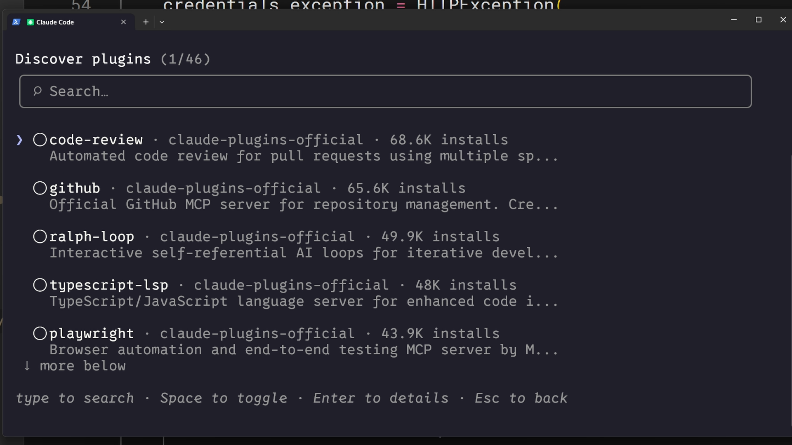
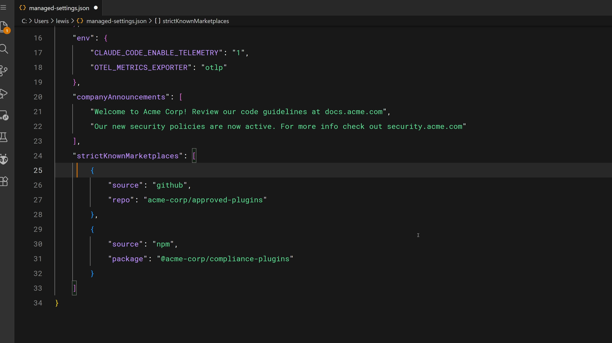
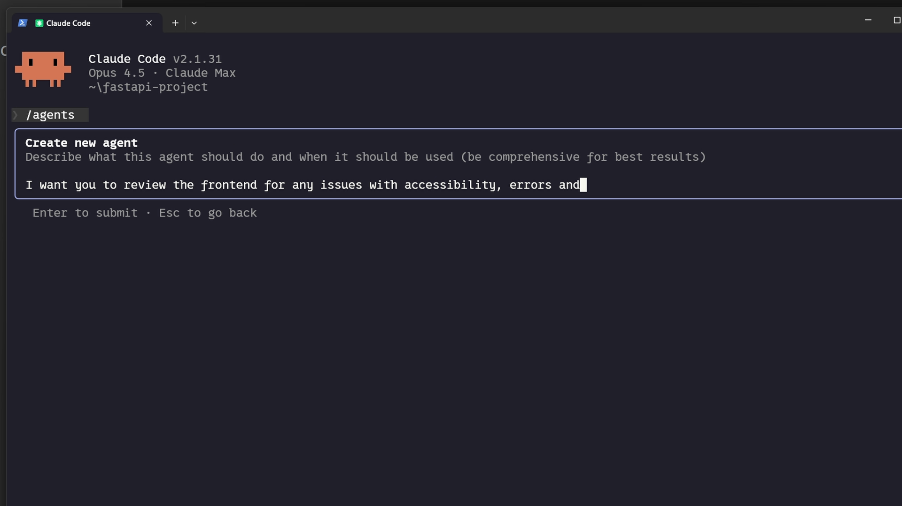

학습 내용
예상 소요 시간: 20분
이 레슨을 마치면 다음을 수행할 수 있습니다:
- Git 저장소에 커밋하여 팀과 스킬 공유하기
- 플러그인과 마켓플레이스를 통해 프로젝트 전반에 스킬 배포하기
- 엔터프라이즈 관리 설정을 사용해 조직 전체에 스킬 배포하기
- 특정 스킬을 사용하는 커스텀 서브에이전트 구성하기
스킬 공유하기
(4분)
스킬은 팀이나 조직 전체에 공유될 때 훨씬 더 가치 있어집니다. 이 영상에서는 세 가지 주요 배포 방법인 저장소 커밋, 플러그인, 엔터프라이즈 관리 설정을 다루고, 커스텀 서브에이전트가 스킬을 사용하도록 구성하는 방법을 설명합니다. 어떤 상황에 어떤 방법이 적합한지, 그리고 중요한 주의 사항인 서브에이전트는 스킬을 자동으로 상속하지 않는다는 점을 어떻게 처리하는지 배웁니다.
핵심 요약
-
.claude/skills에 있는 프로젝트 스킬은 Git을 통해 자동으로 공유됩니다 — 저장소를 클론하는 누구나 스킬을 받게 됩니다 - 플러그인을 사용하면 마켓플레이스를 통해 여러 저장소에 스킬을 배포하여 더 넓은 커뮤니티에서 활용할 수 있습니다
- 엔터프라이즈 관리 설정은 최우선 순위로 조직 전체에 스킬을 배포하며, 필수 기준 및 컴플라이언스 적용에 이상적입니다
-
서브에이전트는 자동으로 스킬을 인식하지 않습니다 — 커스텀 에이전트의 프론트매터
skills필드에 명시적으로 스킬을 나열해야 합니다 -
내장 에이전트(Explorer, Plan, Verify)는 스킬에 전혀 접근할 수 없습니다 —
.claude/agents에 정의된 커스텀 서브에이전트만 접근 가능합니다
스킬은 공유될 때 훨씬 더 가치 있어집니다. PR 리뷰 스킬을 혼자만 사용하면 도움이 되지만, 팀 전체와 공유하면 코드 리뷰를 표준화하고 조직 전반에 일관된 경험을 만들 수 있습니다. 스킬을 배포하는 다양한 방법을 살펴봅시다.
저장소에 스킬 커밋하기
가장 간단한 공유 방법은 스킬을 저장소에 직접 커밋하는 것입니다. .claude/skills에 스킬을 배치하면 저장소를 클론하는 누구나 자동으로 스킬을 받게 됩니다 — 별도 설치가 필요 없습니다.
업데이트를 푸시하면 다음 번 풀 시 모든 사람이 업데이트를 받습니다. 이 방법은 다음과 같은 경우에 잘 맞습니다:
- 팀 코딩 표준
- 프로젝트 특화 워크플로우
- 코드베이스 구조를 참조하는 스킬
.claude 디렉토리에는 에이전트, 훅, 스킬, 설정이 포함되어 있으며, 모두 버전 관리되고 일반적인 Git 워크플로우를 통해 팀과 공유됩니다.
플러그인을 통한 스킬 배포
플러그인은 팀과 프로젝트 전반에 공유되도록 설계된 커스텀 기능으로 Claude Code를 확장하는 방법입니다. 플러그인 프로젝트에서 .claude 디렉토리와 유사한 파일 구조를 따르는 skills 디렉토리를 생성하세요 — 각 스킬은 자체 폴더를 갖고 그 안에 SKILL.md 파일이 있습니다.
플러그인을 마켓플레이스에 배포하면 다른 사용자들이 직접 Claude Code에 검색하고 설치할 수 있습니다.

이 방법은 스킬이 프로젝트에 특화되지 않고 즉각적인 팀을 넘어 커뮤니티 구성원에게 유용할 수 있을 때 가장 적합합니다.
관리 설정을 통한 엔터프라이즈 배포
관리자는 관리 설정을 통해 조직 전체에 스킬을 배포할 수 있습니다. 엔터프라이즈 스킬은 최우선 순위를 가지며, 동일한 이름의 개인, 프로젝트, 플러그인 스킬을 재정의합니다.

관리 설정 파일은 플러그인 설치 출처를 제어하기 위한 strictKnownMarketplaces와 같은 기능을 지원합니다:
"strictKnownMarketplaces": [
{
"source": "github",
"repo": "acme-corp/approved-plugins"
},
{
"source": "npm",
"package": "@acme-corp/compliance-plugins"
}
]이는 조직 전반에 반드시 일관되게 적용되어야 하는 필수 기준, 보안 요구 사항, 컴플라이언스 워크플로우, 코딩 관행에 적합한 선택입니다. 핵심 키워드는 "반드시"입니다.
스킬과 서브에이전트
사람들을 놀라게 하는 사실이 있습니다: 서브에이전트는 자동으로 스킬을 인식하지 않습니다. 서브에이전트에 작업을 위임하면, 서브에이전트는 새롭고 깨끗한 컨텍스트로 시작합니다.
이해해야 할 중요한 차이점이 있습니다:
- 내장 에이전트(Explorer, Plan, Verify 등)는 스킬에 전혀 접근할 수 없습니다
- 직접 정의한 커스텀 서브에이전트는 스킬을 사용할 수 있지만, 명시적으로 나열한 경우에만 가능합니다
- 스킬은 서브에이전트가 시작할 때 로드되며, 메인 대화처럼 요청 시 로드되지 않습니다
스킬이 있는 커스텀 서브에이전트를 만들려면 .claude/agents에 에이전트 마크다운 파일을 추가하세요. Claude Code에서 /agents 명령을 사용해 대화형으로 생성할 수 있습니다:

생성된 에이전트 파일에는 로드할 스킬을 나열하는 skills 필드가 포함됩니다. 프론트매터는 다음과 같습니다:
---
name: frontend-security-accessibility-reviewer
description: "Use this agent when you need to review frontend code for accessibility..."
tools: Bash, Glob, Grep, Read, WebFetch, WebSearch, Skill...
model: sonnet
color: blue
skills: accessibility-audit, performance-check
---
이 서브에이전트에 위임하면 두 스킬이 모두 로드되어 모든 리뷰에 적용됩니다. 먼저 .claude/skills 디렉토리에 스킬이 있는지 확인한 다음, 새 서브에이전트를 만들거나 기존 에이전트의 마크다운 파일에 skills 필드를 추가하세요.
이 패턴은 다음과 같은 경우에 매우 효과적입니다:
- 특정 전문성을 가진 독립적인 작업 위임이 필요할 때
- 서로 다른 서브에이전트에 다른 스킬이 필요할 때 (프론트엔드 리뷰어 vs. 백엔드 리뷰어)
- 프롬프트에 의존하지 않고 위임된 작업에 기준을 강제하고 싶을 때
레슨 돌아보기
- 지금까지 구축을 고려하던 스킬에 어떤 공유 방법(저장소, 플러그인, 엔터프라이즈)이 가장 적합할까요?
- 특정 스킬을 가진 커스텀 서브에이전트가 위임된 작업의 일관성을 향상시킬 수 있는 워크플로우가 있나요?
다음 내용
마지막 레슨에서는 스킬이 트리거되지 않는 경우, 우선순위 충돌, 런타임 오류 등 일반적인 스킬 문제를 해결하는 방법을 언제든 참고할 수 있는 실용적인 체크리스트와 함께 배웁니다.
피드백
강좌를 진행하면서 업무에서 스킬을 어떻게 활용하고 계신지, 그리고 의견이 있으시면 꼭 알려주세요. 피드백을 여기에서 공유해 주세요.